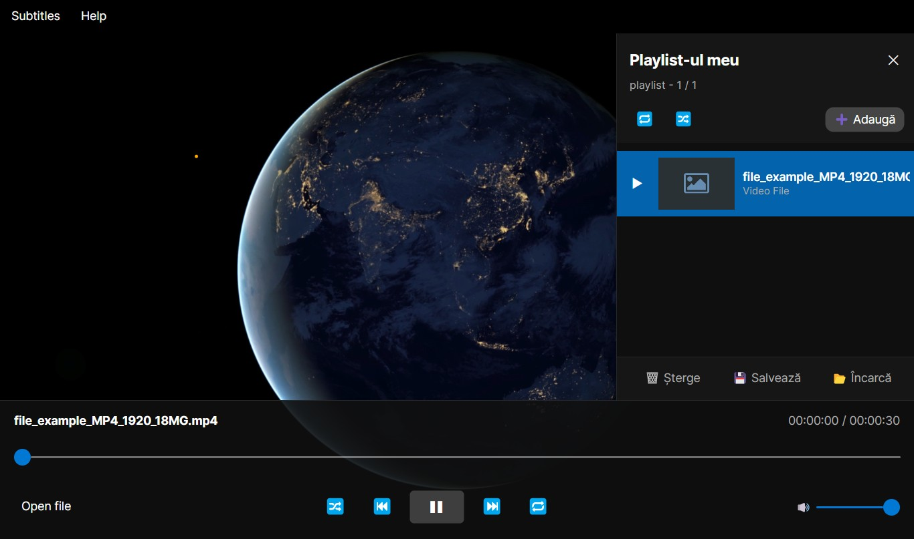
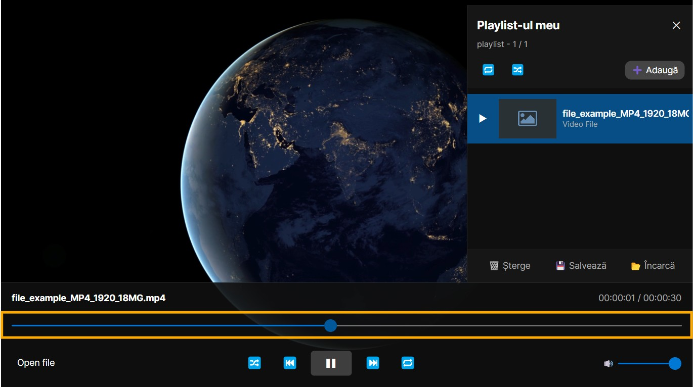
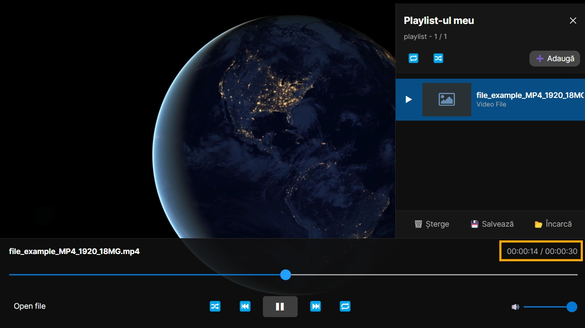

Folosire barei de cautare
Bara de cautare dintr-un fisier media permite deplasarea rapida a timpului de redare dintr-un videoclip sau fisier audio
- Se porneste redarea unui fisier

- Se trage bara orizontala care controleaza redarea fisierului

- Fisierul va trece imediat la timpul specificat de bara de cautare
